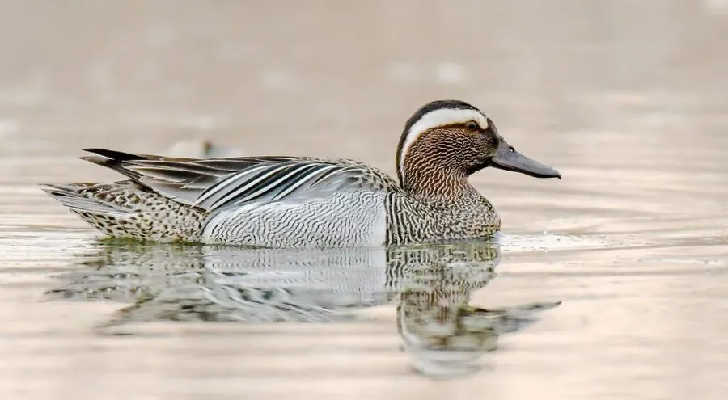

鸟类 · 动物界
白眉鸭 Spatula querquedula

体型小巧的欧亚鸭类，雄鸟头顶深褐、眉纹雪白，飞行时露出蓝绿翼镜，迁徙季节常成大群在浅水沼泽停留。
- 分类
- 门脊索动物门纲鸟纲目雁形目科鸭科属匙嘴鸭属
- 栖息环境
- 欧亚大陆的浅水湖泊、沼泽、稻田与水库，喜水草茂密处
- 地理分布
- 繁殖于欧洲、中亚至西伯利亚，越冬于非洲、南亚、东南亚及中国南方
- 保护级别
- IUCN 无危（LC）
物种志
白眉鸭体长 37–41 cm，体重 300–450 g，是体型较小的鸭类。雄鸟繁殖羽头顶深褐，一条宽阔的白色眉纹从眼上延伸至颈侧，十分醒目；胸部和体侧浅褐带细纹，肩羽细长，翼镜蓝绿。雌鸟通体黄褐并密布斑纹，眉纹浅淡，喙较宽。
它们繁殖于欧洲、中亚至西伯利亚的草原湖泊与沼泽，冬季南迁至非洲、南亚、东南亚及中国南方。白眉鸭偏爱水草茂密的浅水沼泽、稻田和水库，常成小群在水面滤食，食物包括水生植物的种子、嫩芽以及螺类、水生昆虫。繁殖期在 5–6 月，营巢于草丛中，每窝产卵 8–11 枚，雌鸟孵化约 21–23 天。迁徙时它们常在夜间飞行，白天在浅水处休息和觅食。
形态与习性
- 食性水生植物种子与嫩芽，兼食螺类和水生昆虫
- 体长37–41 cm
- 体重300–450 g
- 繁殖5–6 月，每窝 8–11 枚，孵化 21–23 天
- 迁徙夜间飞行，从西伯利亚南部迁往非洲或南亚
- 寿命约 8–10 年
趣味知识
- 雄鸟那道雪白的眉纹从眼睛上方一直延伸到颈后，是它得名的原因。
- 白眉鸭体型虽小，却能长途迁徙，从西伯利亚一直飞到非洲或南亚越冬。
- 它们常用扁宽的喙在水面滤食，动作轻快，常与其他野鸭混群。